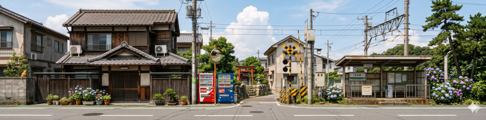
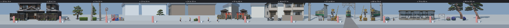
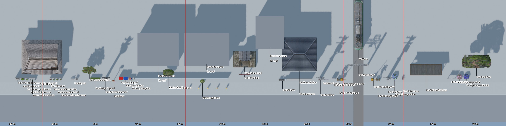

KM1-1 Hase Lanes as the game now builds it (Kamakura's own level, in its own scene, not yet shown to players): every model you approved, the sixteen plants and pots from your plant views, the home at the door and Hase Station at the stop, read from the level's code and rendered through the game camera. Where a picture is still to come, a plain box stands in: the lane's houses (from your lane pictures KM1-1a to e), the block wall and the wooden fence.

Screen by screen as the game camera frames it (about 10 m back, 3.1 m above and below the lane at 16:9). The pink post and the white cube are the kid and the ball, for scale. The shading is Blender's, not the game's toon look.


| x (m) | What happens |
|---|---|
| -12 | start: the front door |
| 22 | first-graders walking to school in a line |
| 60 | the level crossing |
| 74 | Hase Station: the stop |
| x (m) | Model | Why there |
|---|---|---|
| -17.8 | KmAirConditioner | |
| -16.6 | KmShrubPlanter | |
| -15.6 | KmHydrangeaPlanter | |
| -14.8 | KmPotPinkFlowers | |
| -14.3 | KmPotWhiteDaisies | |
| -13.7 | KmMorningGloryPot | |
| -12.0 | KmHome | the home at the door (StreetBuilder.HomeFrontKM) |
| -10.0 | KmLetterbox | |
| -9.2 | KmBonsaiTerracotta | |
| -8.4 | KmBonsaiBlueBowl | |
| -7.6 | KmStoneStandFlowers | |
| -4.4 | KmBicycle | |
| -0.8 | KmPersimmonTree | |
| 0.6 | KmHedgeClipped | |
| 3.0 | KmPoleTransformer | |
| 5.0 | KmMirror | |
| 6.7 | KmVendingRed | |
| 7.8 | KmVendingBlue | |
| 9.2 | KmRecyclingBins | |
| 18.0 | KmGardenPine | |
| 26.0 | KmMossyStone | |
| 36.0 | KmToriiSmall | |
| 36.0 | KmShrineSmall | |
| 45.0 | KmScooter | |
| 49.0 | KmHouseBeige | |
| 54.0 | KmPolePlain | |
| 54.6 | KmStreetLamp | |
| 57.2 | KmControlCabinet | |
| 58.4 | KmCrossingSignal | the bells and lamps, this side |
| 59.4 | KmCrossingBarrier | its barrier |
| 63.0 | KmWireGantry | |
| 63.0 | KmTram | the tram coming down the tracks (the crossing's traffic) |
| 66.6 | KmCrossingBarrier | the far barrier |
| 67.6 | KmCrossingSignal | the far bells and lamps |
| 70.0 | KmPolePlain | |
| 71.6 | KmHydrangeaBlue | |
| 73.6 | KmTicketGate | Hase's ticket gate: the stop |
| 79.0 | KmStationPlatform | |
| 85.0 | KmStationSign | |
| 87.0 | KmHydrangeaPink | |
| 88.6 | KmHydrangeaViolet | |
| 91.0 | KmBlackPine | |
| 15.5 | (to come) | house to come |
| 15.5 | (to come) | its roof |
| 21.0 | (to come) | BlockWall |
| 27.0 | (to come) | house to come |
| 27.0 | (to come) | its roof |
| 42.0 | (to come) | house to come |
| 42.0 | (to come) | its roof |
| 49.0 | (to come) | WoodenFence |
| 63.0 | (to come) | rails |